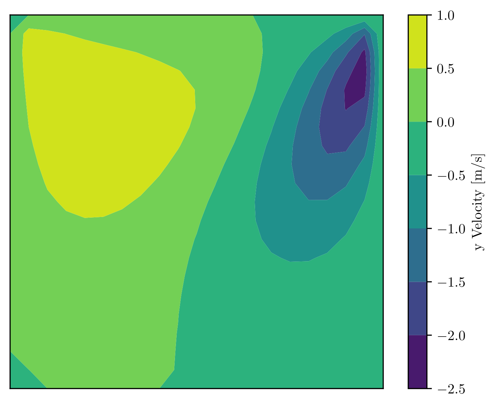

Computational Fluid Mechanics Work
21/10/2025
It's been a long time since I thought about my master's thesis. I worked on incompressible flow modelling. That means you can neglect density variation of the fluid medium, which usually means low speed. It means the divergence of velocity is zero.
I wrote the streamfunction-vorticity formulation first, which is only applicable to two dimensions. This is because the streamfunction only exists in two dimensions. I validated the results produced by my code using the lid-driven square cavity benchmark (2D), comparing centreline velocities. The code was written in Python and is currently public. Link.

The figure above shows divergence of velocity for the vector potential-vorticity formulation. It is a slice of the centreplane of a cube, where the cube is full of continuous fluid, and the lid is moving from left to right. This is a standard benchmark against which to test the results of your code. The results are well-known. In both the streamfunction-vorticity formulation (2D) and the vector-potential vorticity formulation (3D), the divergence of velocity is satisfied explicitly. Hence why divergence above is small. This is the advantage of vorticity formulations over, say, the primitive variable approach. The main focus of my thesis was the vector-potential vorticity formulation, which is harder to implement. This method requires more work to be workable. The open source code is available: Link.
In layman's terms:
Imagine a solid cube full of any fluid - air, water, Coca-Cola. Now imagine moving the upper surface in some direction. How would the fluid in the container move? What pattern would it make? Solving a complex equation approximately, with the aid of a computer, allows you predict what the patterns would be. You can say, at any point in the cube (for the most part), and even at any particular instance in time, precisely what the temperature, pressure, speed, and direction of motion of the fluid will be. The resulting pattern that your code produces, can be compared against experiments, so you can check it's true. Here's one such pattern:
What does this show? The speed of motion of the fluid in the up and down direction, on a cross-section of the cube along the centreplane. Lid motion is from left to right.